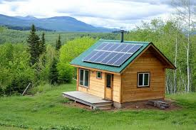
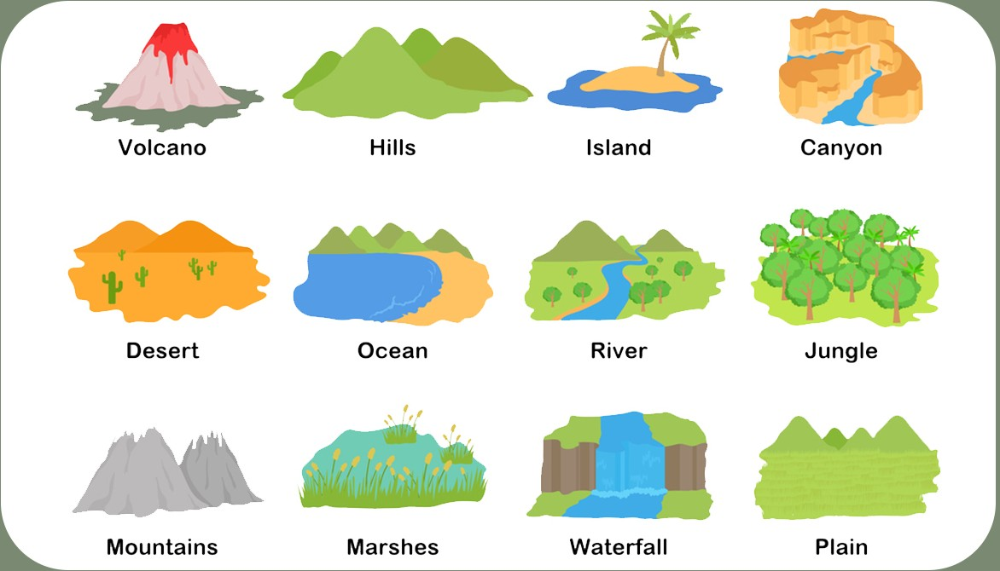

How to be Self-Sufficent
Exploring the diffrent ways people have approached off-grid living. We provide an overview of the possibilities to help make your off-grid dreams come true. Look into everything we have to offer and see if you see your DIY future infront of you.
Shelter Options
There are many options to chose from given your wants and needs.
- Log Cabins
- Timber Frame
- A-Frames
- Tiny Homes
- Pre-Fab
- Shipping Containers
- Earth-Bermed
- Earth Bag
- Yurts

Necessities
How to handle power generation and water collection.
- Solar Pannels
- Power Storage
- Turbine
- Geothermal
- Micro-Hydro
- Generator
- Rainwater Harvesting
- Deep Wells
- Woodstove
- Composting Toilets
- Septic Systems

The Land
Learning the possibilities and how to find your land.
- Desert
- Forest
- Medows
